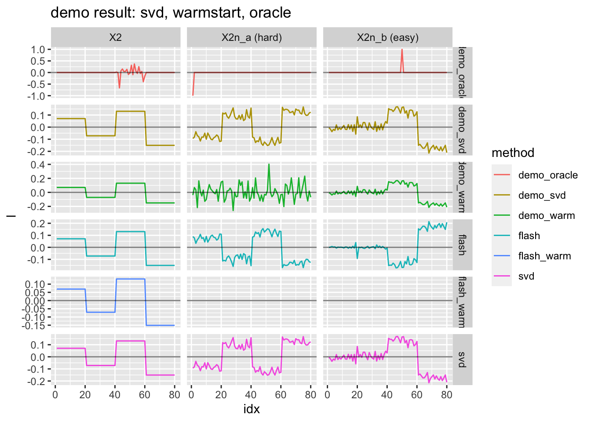
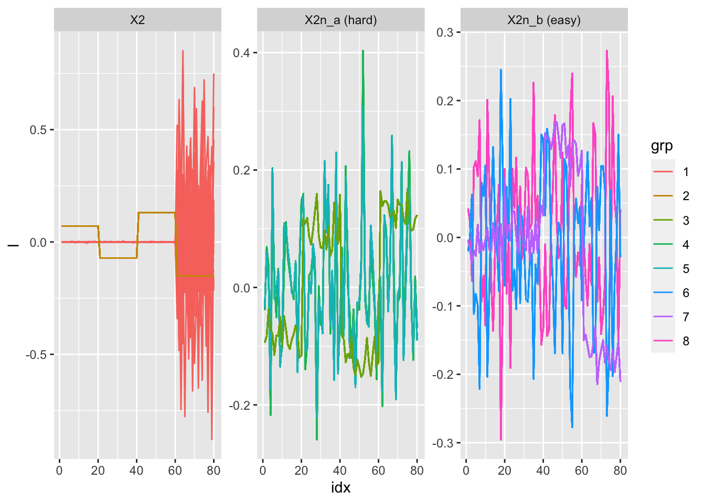
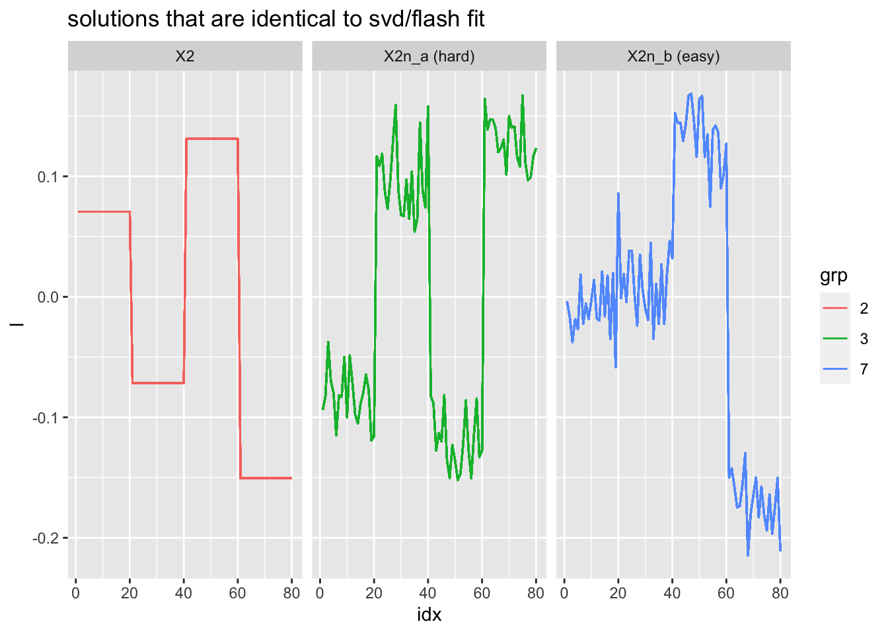
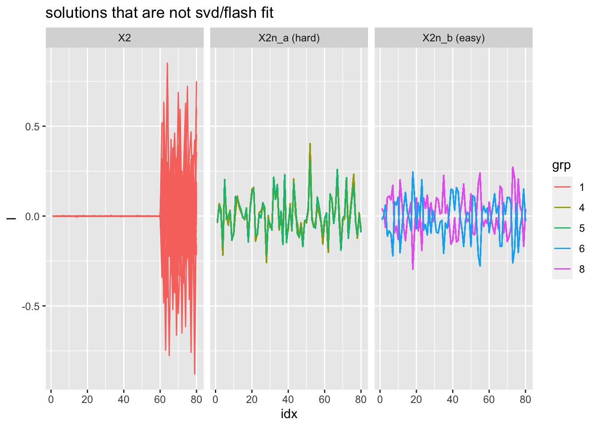

Integrate f out: demo
Joonsuk Kang
2020-11-3
Last updated: 2020-11-04
Checks: 7 0
Knit directory: mf/
This reproducible R Markdown analysis was created with workflowr (version 1.6.2). The Checks tab describes the reproducibility checks that were applied when the results were created. The Past versions tab lists the development history.
Great! Since the R Markdown file has been committed to the Git repository, you know the exact version of the code that produced these results.
Great job! The global environment was empty. Objects defined in the global environment can affect the analysis in your R Markdown file in unknown ways. For reproduciblity it’s best to always run the code in an empty environment.
The command set.seed(20201010) was run prior to running the code in the R Markdown file. Setting a seed ensures that any results that rely on randomness, e.g. subsampling or permutations, are reproducible.
Great job! Recording the operating system, R version, and package versions is critical for reproducibility.
Nice! There were no cached chunks for this analysis, so you can be confident that you successfully produced the results during this run.
Great job! Using relative paths to the files within your workflowr project makes it easier to run your code on other machines.
Great! You are using Git for version control. Tracking code development and connecting the code version to the results is critical for reproducibility.
The results in this page were generated with repository version 50d07c3. See the Past versions tab to see a history of the changes made to the R Markdown and HTML files.
Note that you need to be careful to ensure that all relevant files for the analysis have been committed to Git prior to generating the results (you can use wflow_publish or wflow_git_commit). workflowr only checks the R Markdown file, but you know if there are other scripts or data files that it depends on. Below is the status of the Git repository when the results were generated:
Ignored files:
Ignored: .Rhistory
Ignored: .Rproj.user/
Ignored: analysis/.Rhistory
Untracked files:
Untracked: code/code_wflow_publish.R
Untracked: code/temp.R
Untracked: output/Likelihood.gif
Untracked: writing/
Unstaged changes:
Deleted: analysis/ChoosingW.Rmd
Deleted: analysis/concentration.Rmd
Modified: analysis/index.Rmd
Note that any generated files, e.g. HTML, png, CSS, etc., are not included in this status report because it is ok for generated content to have uncommitted changes.
These are the previous versions of the repository in which changes were made to the R Markdown (analysis/demo_toy.Rmd) and HTML (docs/demo_toy.html) files. If you’ve configured a remote Git repository (see ?wflow_git_remote), click on the hyperlinks in the table below to view the files as they were in that past version.
| File | Version | Author | Date | Message |
|---|---|---|---|---|
| Rmd | 50d07c3 | Joonsuk Kang | 2020-11-04 | Integrate f out: demo |
We investigate the performance of the “integrating f out” method on the toy data.
Data
More on the rank-1 problem formulation can be found here: rank1_setup
# code originally from https://stephens999.github.io/misc/tree_pca_03.html.
#--------------------------------------------------
# create X
set.seed(123)
p = 1000
n = 20
f = list()
for(i in 1:6){
f[[i]] = rnorm(p)
}
X =matrix(0,ncol=4*n, nrow=p)
X[,1:(2*n)] = f[[1]]
X[,(2*n+1):(4*n)] = f[[2]]
X[,1:n] = X[,1:n]+f[[3]]
X[,(n+1):(2*n)] = X[,(n+1):(2*n)]+f[[4]]
X[,(2*n+1):(3*n)] = X[,(2*n+1):(3*n)] + f[[5]]
X[,(3*n+1):(4*n)] = X[,(3*n+1):(4*n)] + f[[6]]
X.svd = svd(X)
# create X2
X2 = X- X.svd$u[,1:2] %*% diag(X.svd$d[1:2]) %*% t(X.svd$v[,1:2])
# adding noise
set.seed(9) # the seed where flash didn't work
X2n_a = X2 + rnorm(4*n*p,sd=3)
set.seed(5) # the seed where flash did work
X2n_b = X2 + rnorm(4*n*p,sd=3)
#--------------------------------------------------
# take transpose
X2 <- t(X2)
X2n_a <- t(X2n_a)
X2n_b <- t(X2n_b)
# svd
X2.svd = svd(X2)
X2n_a.svd = svd(X2n_a)
X2n_b.svd = svd(X2n_b)To be consistent with the notation in the integrate f out model writeup, we use the transposed version of matrices. Now we have data with 80 rows (individuals) X 1000 columns (genes).
Demo Functions
Initialization
Three initializations are defined. The first one uses the singular vector of X as the initialization of l and other parameters are set accordingly. The second one is a random initialization. The initialization of l is drawn from N(0,I) and rescaled; the initial values of w are set at 10^(-6). The third one is ‘warmstart’, which uses a fixed informed initialization of l and other parameters are set accordingly. Note that the warmstart functionality is coded as an option of the function demo.init.svd.
# initialization of l using svd
demo.init.svd <- function(X, warmstart=FALSE, warmstart.l=NA){
N <- nrow(X)
P <- ncol(X)
X.svd <- svd(X)
init.l <- X.svd$u[,1]
############### temporary functionality; overwrite init.l if given warmstart
if(warmstart==TRUE){ init.l <- warmstart.l }
###############
init.w <- init.l^2
init.sigmasq <- c((norm(X, type='f')^2-t(init.l)%*%X%*%t(X)%*%init.l)/((N-1)*P))
init.delta <- c((t(init.l)%*%X%*%t(X)%*%init.l)/(P*init.sigmasq)-1)
# set the grid
grid.min <- max(min(init.w)/10, 10^(-10))
grid.max <- max(init.w)*10
sigmasq.grid <- exp(seq(from=log(grid.min), to=log(grid.max), by=0.5*log(2))) # grid by multiples of sqrt(2)
init.pi <- sigmasq.grid
for (i in 1:length(init.pi)){
init.pi[i] <- sum(dnorm(init.w, mean=sigmasq.grid[i], sd=max(init.w)))
}
init.pi <- init.pi/sum(init.pi)
init.Ew.inv <- 1/init.w
out.list = list()
out.list$l <- init.l
out.list$w <- init.w
out.list$Ew.inv <- init.Ew.inv
out.list$sigmasq <- init.sigmasq
out.list$delta <- init.delta
out.list$pi <- init.pi
out.list$sigmasq.grid <- sigmasq.grid
return(out.list)
}# random initialization
demo.init.random <- function(X, init.sparsity=1, w.inv=10^6){
N <- nrow(X)
P <- ncol(X)
init.l <- rnorm(n=N, mean=0, sd=1) # random initialization
init.l <- init.l/sqrt(sum(init.l^2)) # normalize length
init.sigmasq <- c((norm(X, type='f')^2-t(init.l)%*%X%*%t(X)%*%init.l)/((N-1)*P))
init.delta <- c((t(init.l)%*%X%*%t(X)%*%init.l)/(P*init.sigmasq)-1)
# set the grid
grid.min <- 10^(-10)
grid.max <- 10
sigmasq.grid <- exp(seq(from=log(grid.min), to=log(grid.max), by=0.5*log(2))) # grid by multiples of sqrt(2)
init.pi <- 1/init.sparsity^(1:length(sigmasq.grid))
init.pi <- init.pi/sum(init.pi)
init.Ew.inv <- rep(w.inv,times=N)
out.list = list()
out.list$l <- init.l
out.list$Ew.inv <- init.Ew.inv
out.list$sigmasq <- init.sigmasq
out.list$delta <- init.delta
out.list$pi <- init.pi
out.list$sigmasq.grid <- sigmasq.grid
return(out.list)
}Updates
# leg A: given w, update l (essentially, Sigma.star), sigmasq, delta
demo.update.A <- function(X, sigmasq, delta, Ew.inv){
# input: X; sigmasq, delta, Ew.inv,
# output: Sigma.star, Elsq, Elxxl; updated sigmasq, delta; u1 (first left singular vector of Y)
N <- nrow(X)
P <- ncol(X)
Y <- X%*%t(X)/(sigmasq*(1+1/delta)) - diag(x=Ew.inv)
Y.svd <- svd(Y)
eval.expectation <- function(k){(sum(1/(k/(sigmasq*(1+1/delta))-Y.svd$d))-1)^2}
find.k.star <- optimize(f=eval.expectation,
interval = c((Y.svd$d[1]+1)*sigmasq*(1+1/delta), (Y.svd$d[1]+N)*sigmasq*(1+1/delta))
)
k.star <- find.k.star$minimum
# #######
d.tilde <- 1/(k.star/(sigmasq*(1+1/delta))-Y.svd$d)
Sigma.star <- Y.svd$u %*% diag(x=d.tilde) %*% t(Y.svd$u)
# ####### mpfr ver
# d.tilde <- Rmpfr::mpfr(1/(k.star/(sigmasq*(1+1/delta))-Y.svd$d),30)
# Sigma.star <- matrix(0, nrow=N, ncol=N)
# for (i in 1:N){
# Sigma.star <- Sigma.star + d.tilde[i]*Y.svd$u[,i] %*% t(Y.svd$u[,i])
# }
# #######
Elsq <- diag(Sigma.star)
ElXXl <- sum(diag((t(X) %*% Sigma.star %*% X)))
sigmasq <- (norm(X, type='f')^2-ElXXl/(1+1/delta))/(N*P)
delta <- max(ElXXl/(P*sigmasq)-1,10^(-10)) # lower bound at 10^(-10)
out.list = list()
out.list$Sigma.star = Sigma.star
out.list$Elsq = Elsq
out.list$ElXXl = ElXXl
out.list$sigmasq = sigmasq
out.list$delta = delta
out.list$u1 = Y.svd$u[,1]
return(out.list)
}
# leg B: update w (essentially, pi_q) and g (essentially, Ew.inv)
demo.update.B <- function(X, Elsq, pi, sigmasq.grid, niter.wg = 10){
# input: Elsq, pi; sigmasq.grid, niter.wg
# output: pi, pi_q Ew.inv
N <- nrow(X)
P <- ncol(X)
for (wg.iter in 1:niter.wg){ # more than one iteration helps
pi_q <- matrix(data=0, nrow=N, ncol=length(sigmasq.grid))
for (i in 1:N){
pi_q[i,] <- pi*sigmasq.grid^(-0.5)*exp(-Elsq[i]/(2*sigmasq.grid))
pi_q[i,] <- pi_q[i,]/sum(pi_q[i,])
}
pi <- colSums(pi_q)/N
}
Ew.inv <- vector(mode='numeric', length=N)
for (i in 1:N){
Ew.inv[i] <- sum(pi_q[i,]*(1/sigmasq.grid))
}
out.list = list()
out.list$pi = pi
out.list$pi_q = pi_q
out.list$Ew.inv = Ew.inv
return(out.list)
}
demo.elbo <- function(N,P,
sigmasq, delta,
Sigma.star, ElXXl, Elsq,
pi, pi_q,
sigmasq.grid,
Ew.inv
){
logpi <- log(pi)
logpi[pi==0] <- 0 # to exclude -Inf (where pi=0) in the sum
elbo <- -N*P*log(sigmasq)/2-P*log(1+delta)/2-norm(X,'f')^2/(2*sigmasq)+ElXXl/(2*sigmasq*(1+1/delta))+
log(det(Sigma.star))/2-sum(log(pi_q)*pi_q, na.rm=TRUE)-sum(pi_q %*% log(sigmasq.grid))/2-sum(Elsq*Ew.inv)/2+
sum(pi_q %*% logpi)
return(elbo)
}initialization + updates + elbo
demo.fit <- function(X, niter, init='rand', print.elbo=TRUE, warmstart.l=NA){
N <- nrow(X)
P <- ncol(X)
if(init=="rand"){ par.init <- demo.init.random(X) }
if(init=="svd"){ par.init <- demo.init.svd(X) }
if(init=="warm"){ par.init <- demo.init.svd(X, warmstart=TRUE, warmstart.l=warmstart.l)}
l <- par.init$l
w <- par.init$w
Ew.inv <- par.init$Ew.inv
sigmasq <- par.init$sigmasq
delta <- par.init$delta
pi <- par.init$pi
sigmasq.grid <- par.init$sigmasq.grid
elbo <- vector('numeric',length=niter)
for (i in 1:niter){
# leg A
temp.A <- demo.update.A(X,
sigmasq=sigmasq,
delta=delta,
Ew.inv=Ew.inv)
Sigma.star <- temp.A$Sigma.star
Elsq <- temp.A$Elsq
ElXXl <- temp.A$ElXXl
sigmasq <- temp.A$sigmasq
delta <- temp.A$delta
# leg B
temp.B <- demo.update.B(X,
Elsq=Elsq,
pi=pi,
sigmasq.grid=sigmasq.grid)
pi <- temp.B$pi
pi_q <- temp.B$pi_q
Ew.inv <- temp.B$Ew.inv
# elbo
elbo[i] <- demo.elbo(N,P,
sigmasq, delta,
Sigma.star, ElXXl, Elsq,
pi, pi_q,
sigmasq.grid,
Ew.inv
)
if(print.elbo==TRUE){print(elbo[i])}
}
out.list = list()
out.list$Sigma.star <- Sigma.star
out.list$Elsq <- Elsq
out.list$ElXXl <- ElXXl
out.list$sigmasq <- sigmasq
out.list$delta <- delta
out.list$pi <- pi
out.list$pi_q <- pi_q
out.list$Ew.inv <- Ew.inv
out.list$u1 <- temp.A$u1
out.list$sigmasq.grid <- sigmasq.grid
out.list$elbo <- elbo
return(out.list)
}Demo Analysis
library(tidyverse)── Attaching packages ─────────────────────────────────────────────── tidyverse 1.3.0 ──✓ ggplot2 3.3.2 ✓ purrr 0.3.4
✓ tibble 3.0.3 ✓ dplyr 1.0.2
✓ tidyr 1.1.2 ✓ stringr 1.4.0
✓ readr 1.4.0 ✓ forcats 0.5.0── Conflicts ────────────────────────────────────────────────── tidyverse_conflicts() ──
x dplyr::filter() masks stats::filter()
x dplyr::lag() masks stats::lag()library(flashr)Recap: the flash/svd fit for the rank-1 problem
# flash fit: restricted to rank-1
X2.flash1 = flashr::flash(X2,1,ebnm_fn = list(l="ebnm_pn", f="ebnm_ash"),var_type = "constant", verbose=FALSE)
X2n_a.flash1 = flashr::flash(X2n_a,1,ebnm_fn = list(l="ebnm_pn", f="ebnm_ash"),var_type = "constant", verbose=FALSE)
X2n_b.flash1 = flashr::flash(X2n_b,1,ebnm_fn = list(l="ebnm_pn", f="ebnm_ash"),var_type = "constant", verbose=FALSE)Warning in verbose_obj_decrease_warning(): An iteration decreased the objective.
This happens occasionally, perhaps due to numeric reasons. You could ignore this
warning, but you might like to check out https://github.com/stephenslab/flashr/
issues/26 for more details.data.frame(idx = 1:80,
l = c(X2.svd$u[,1],
X2n_a.svd$u[,1],
X2n_b.svd$u[,1],
X2.flash1$ldf$l[,1],
X2n_a.flash1$ldf$l[,1],
X2n_b.flash1$ldf$l[,1]),
data = rep(rep(c("X2", "X2n_a (hard)", "X2n_b (easy)"), each=80), times=2),
method = rep(c("svd", "flash"), each=80*3)
) %>%
# adjust sign for illustration
mutate(l = ifelse((data=="X2n_b (easy)" & method=="flash"),
-l,
l)
) -> X2.fit1
# warmstart: sparse fit (from X2n_b) initialization for flash on data X2
X2.flash.warmstart1 = flashr::flash(X2,K=1,f_init=X2n_b.flash1,ebnm_fn = list(l="ebnm_pn", f="ebnm_ash"),var_type = "constant",backfit = TRUE,greedy = FALSE, verbose=FALSE)
data.frame(idx=1:80,
l = c(X2.flash.warmstart1$ldf$l[,1]), data="X2", method="flash_warm") %>%
rbind(X2.fit1) -> X2.fit1
X2.fit1 %>%
ggplot()+geom_line(aes(x=idx, y=l, group=method, col=method))+
facet_grid(method~data, labeller=label_both)+geom_hline(yintercept=0)+
ggtitle("The Rank-1 Problem")
demo results: main analysis
niter <- 20
# svd initialization
X2.fit.svd <- demo.fit(X2, niter=niter, init='svd', print.elbo=FALSE)
X2n_a.fit.svd <- demo.fit(X2n_a, niter=niter, init='svd', print.elbo=FALSE)
X2n_b.fit.svd <- demo.fit(X2n_b, niter=niter, init='svd', print.elbo=FALSE)
# warmstart: initialization of l as the sparse singular vector in X2n_b.
warmstart.l <- X2n_b.svd$u[,1]
X2.fit.warm <- demo.fit(X2, niter=niter, init='warm', warmstart.l=warmstart.l, print.elbo=FALSE)
X2n_a.fit.warm <- demo.fit(X2n_a, niter=100, init='warm', warmstart.l=warmstart.l, print.elbo=FALSE)
X2n_b.fit.warm <- demo.fit(X2n_b, niter=niter, init='warm', warmstart.l=warmstart.l, print.elbo=FALSE)
# oracle: initialization of l as the sparse solution (0,0,1,-1)
set.seed(773)
l.oracle <- c(rep(0,40), rep(1,20), rep(-1,20))+
rnorm(n=80, mean=0, sd=0.0001) # small noise added to avoid computational issues
l.oracle <- l.oracle/sqrt(sum(l.oracle^2)) # scale to length 1
X2.fit.oracle <- demo.fit(X2, niter=niter, init='warm', warmstart.l=l.oracle, print.elbo=FALSE)
X2n_a.fit.oracle <- demo.fit(X2n_a, niter=100, init='warm', warmstart.l=l.oracle, print.elbo=FALSE)
X2n_b.fit.oracle <- demo.fit(X2n_b, niter=niter, init='warm', warmstart.l=l.oracle, print.elbo=FALSE)
data.frame(idx=1:80,
l = c(X2.fit.svd$u1, X2n_a.fit.svd$u1, X2n_b.fit.svd$u1,
X2.fit.warm$u1, X2n_a.fit.warm$u1, X2n_b.fit.warm$u1,
X2.fit.oracle$u1, X2n_a.fit.oracle$u1, X2n_b.fit.oracle$u1),
data=rep(rep(c("X2", "X2n_a (hard)", "X2n_b (easy)"), each=80), times=3),
method=rep(c('demo_svd', 'demo_warm', 'demo_oracle'), each=80*3)
) -> fit.demo1
fit.demo1 %>% rbind(X2.fit1) %>%
ggplot(aes(x=idx, y=l, group=method, col=method))+
geom_line()+geom_hline(yintercept=0, alpha=0.5)+
facet_grid(method~data, scales='free')+
ggtitle("demo result: svd, warmstart, oracle")
The results for three initializations for demo are presented: demo_oracle is for the initialization of l as the sparse solution (0,0,1,-1); demo_warm is for the warmstart that the initialization of l as the sparse singular vector in X2n_b; demo_svd is for the initialization of l as the first singular vector.
In short, demo_svd result is identical to its initialization, svd. The demo_warm and demo_oracle do not enhance the performance.
demo results: exploration with random initialization
To check the performance of our new method, the results with random initialization (l drawn from multivariate normal (0,I) and scaled to length 1) are shown.
X2.fit.list = list()
X2n_a.fit.list = list()
X2n_b.fit.list = list()
nseed <- 50
set.seed(773)
for (i in 1:nseed){
X2.fit.list[[i]] <- demo.fit(X2, niter=niter, print.elbo=FALSE)
X2n_a.fit.list[[i]] <- demo.fit(X2n_a, niter=niter, print.elbo=FALSE)
X2n_b.fit.list[[i]] <- demo.fit(X2n_b, niter=niter, print.elbo=FALSE)
}
X2.mat.elbo <- matrix(0, nrow=niter, ncol=nseed)
X2n_a.mat.elbo <- matrix(0, nrow=niter, ncol=nseed)
X2n_b.mat.elbo <- matrix(0, nrow=niter, ncol=nseed)
for (i in 1:nseed){
X2.mat.elbo[,i] <- X2.fit.list[[i]]$elbo
X2n_a.mat.elbo[,i] <- X2n_a.fit.list[[i]]$elbo
X2n_b.mat.elbo[,i] <- X2n_b.fit.list[[i]]$elbo
}
data.frame(elbo = c(c(X2.mat.elbo), c(X2n_a.mat.elbo), c(X2n_b.mat.elbo)),
iteration = rep(1:niter, times=nseed*3),
seed = as.factor(rep(1:(nseed*3), each=niter)),
data=rep(c("X2", "X2n_a (hard)", "X2n_b (easy)"), each=niter*nseed)
) -> df.elbo
df.elbo %>% filter(iteration==niter) %>%
mutate(last.elbo=round(elbo)) %>%
group_by(data, last.elbo) %>% summarise(n=n()) %>% print()`summarise()` regrouping output by 'data' (override with `.groups` argument)# A tibble: 6 x 3
# Groups: data [3]
data last.elbo n
<chr> <dbl> <int>
1 X2 -Inf 25
2 X2 -138675 25
3 X2n_a (hard) -98280 24
4 X2n_a (hard) -97180 26
5 X2n_b (easy) -98720 25
6 X2n_b (easy) -97577 25temp.l <- vector(mode='numeric')
for (i in 1:nseed){ temp.l <- c(temp.l, X2.fit.list[[i]]$u1)}
for (i in 1:nseed){ temp.l <- c(temp.l, X2n_a.fit.list[[i]]$u1)}
for (i in 1:nseed){ temp.l <- c(temp.l, X2n_b.fit.list[[i]]$u1)}
data.frame(
idx=1:80,
l = temp.l,
data = rep(c("X2", "X2n_a (hard)", "X2n_b (easy)"), each=80*nseed),
seed = as.factor(rep(1:(nseed*3), each=80)),
method='demo_rand'
) -> df.demo.rand
df.demo.rand %>% filter(idx==1) %>% # grouping by first position's value
mutate(l.digit2 = factor(round(l,digits=2))) %>%
select(data,seed,l.digit2) %>%
group_by(data,l.digit2) %>%
mutate(grp = factor(cur_group_id())) %>% ungroup() %>%
select(data,seed, grp)-> df.grp
df.grp %>% group_by(data, grp) %>% summarise(n=n()) %>% print()`summarise()` regrouping output by 'data' (override with `.groups` argument)# A tibble: 8 x 3
# Groups: data [3]
data grp n
<chr> <fct> <int>
1 X2 1 25
2 X2 2 25
3 X2n_a (hard) 3 26
4 X2n_a (hard) 4 8
5 X2n_a (hard) 5 16
6 X2n_b (easy) 6 9
7 X2n_b (easy) 7 25
8 X2n_b (easy) 8 16Observations
For all of the three cases, almost half of the estimated
lare identical to the svd/flash fit. (grp 2: 25, 3: 26, 7: 25 out of 50 seeds each). The demo version seems to be working fine since it finds the svd solution well without svd initialization half of the time.For the noiseless data
X2, the grp 1 results (with size 25 out of 50 seeds) puts nonzero values exclusively on individuals 61:80, but does not seem meaningful.For the noisy data
X2n_a, the non-svd results (grp 4 and 5 with size 8 and 16) are essentially identical; doesn’t seem meaningful.For the noisy data
X2n_b, the non-svd results (grp 6 and 8 with size 9 and 16) are essentially identical (up to rotation); doesn’t seem meaningful.
df.demo.rand %>% inner_join(df.grp, by=c('data','seed')) %>%
ggplot()+geom_line(aes(x=idx, y=l, group=seed, col=grp))+
facet_wrap(~data, scales='free')
df.demo.rand %>% inner_join(df.grp, by=c('data','seed')) %>%
filter(grp==2|grp==3|grp==7)%>%
ggplot()+geom_line(aes(x=idx, y=l, group=seed, col=grp))+
facet_wrap(~data)+
ggtitle("solutions that are identical to svd/flash fit")
df.demo.rand %>% inner_join(df.grp, by=c('data','seed')) %>%
filter(grp!=2 & grp!=3 & grp!=7)%>%
ggplot()+geom_line(aes(x=idx, y=l, group=seed, col=grp))+
facet_wrap(~data)+
ggtitle("solutions that are not svd/flash fit")
Thoughts
In our method, the point estimate of \(l\) is given as the first eigenvector of \(\Sigma_*=\left(E[w^{-1}]+\frac{K_*I_N-XX^T}{\sigma^2(1+1/\delta)}\right)^{-1}\).
To satisfy \(l^Tl=1\), the trace of \(\Sigma_*=1\) so the sum of the eigenvalues is 1. And the first eigenvalue 0.9982 dominates all the others, including the second eigenvalue 0.0001465.
sum(eigen(X2.fit.svd$Sigma.star)$values)[1] 0.9992812eigen(X2.fit.svd$Sigma.star)$values[1:5] # first eigenvalue: 0.9982[1] 9.982126e-01 1.465130e-04 1.182127e-05 1.182127e-05 1.182127e-05The two eigenvalues of \(X_2X_2^T\) are 52.10% and 47.90% of the trace; the nominal valeus are 19,674 and 18,090.
eigen(X2%*%t(X2))$values[1:5]/sum(eigen(X2%*%t(X2))$values)[1] 5.209710e-01 4.790290e-01 5.807889e-16 8.270768e-17 6.420152e-17eigen(X2%*%t(X2))$values[1:2][1] 19674.63 18090.68The two observations seem inconsistent: the first two eigenvalues of \(\Sigma_*\) are drastically different while those of \(X_2X_2^T\) are not so. What’s happening?
Recall that in the writeup, we define \(Y=\left( \frac{XX^T}{\sigma^2(1+1/\delta)}-E[w^{-1}] \right)=VDV^T\). Then, the covariance matrix \(\Sigma_*=V\tilde{D}_kV^T\) where \(\tilde{D}_k\) is a diagonal matrix with entries \(\tilde{d}_{k,i}=\frac{1}{\frac{k_*}{\sigma^2(1+1\delta)}-d_i}\) and \(d_i\) are the diagonals of the diagonal matrix \(D\).
Suppose the eigenvalues of \(Y\) are close to the eigenvalues of \(XX^T\) (19,674 and 18,090), though the prior \(w\) would have some effect. The \(k_*\) are chosen so that \(tr(\tilde{D}_k)=\sum_i \frac{1}{\frac{k_*}{\sigma^2(1+1\delta)}-d_i}=1\). Then, the \(k_*\) would be become \(k_*=(d_1+1)\sigma^2(1+1/\delta)=(19,674+1)\sigma^2(1+1/\delta)\) since the other terms would be negligible. The second term is the largest out of the remaining terms: \(\frac{1}{\frac{(19,674+1)\sigma^2(1+1/\delta)}{\sigma^2(1+1\delta)}-d_i}=\frac{1}{19,674+1-18,090}=0.0006309\). The calculation is different from the 1.465130e-04 shown above, possibly due to the effect of the prior.
In short, we have so much data points that the prior does not perform a meaningful function; so the estimate we get is just the first eigenvector of \(X_2X_2^T\).
sessionInfo()R version 4.0.2 (2020-06-22)
Platform: x86_64-apple-darwin17.0 (64-bit)
Running under: macOS Catalina 10.15.7
Matrix products: default
BLAS: /Library/Frameworks/R.framework/Versions/4.0/Resources/lib/libRblas.dylib
LAPACK: /Library/Frameworks/R.framework/Versions/4.0/Resources/lib/libRlapack.dylib
locale:
[1] en_US.UTF-8/en_US.UTF-8/en_US.UTF-8/C/en_US.UTF-8/en_US.UTF-8
attached base packages:
[1] stats graphics grDevices utils datasets methods base
other attached packages:
[1] flashr_0.6-7 forcats_0.5.0 stringr_1.4.0 dplyr_1.0.2
[5] purrr_0.3.4 readr_1.4.0 tidyr_1.1.2 tibble_3.0.3
[9] ggplot2_3.3.2 tidyverse_1.3.0 workflowr_1.6.2
loaded via a namespace (and not attached):
[1] httr_1.4.2 jsonlite_1.7.1 modelr_0.1.8 assertthat_0.2.1
[5] mixsqp_0.3-43 blob_1.2.1 cellranger_1.1.0 yaml_2.2.1
[9] ebnm_0.1-24 pillar_1.4.6 backports_1.1.10 lattice_0.20-41
[13] glue_1.4.2 digest_0.6.25 promises_1.1.1 rvest_0.3.6
[17] colorspace_1.4-1 htmltools_0.5.0 httpuv_1.5.4 Matrix_1.2-18
[21] plyr_1.8.6 pkgconfig_2.0.3 invgamma_1.1 broom_0.7.1
[25] haven_2.3.1 scales_1.1.1 whisker_0.4 later_1.1.0.1
[29] git2r_0.27.1 generics_0.0.2 farver_2.0.3 ellipsis_0.3.1
[33] withr_2.3.0 ashr_2.2-47 cli_2.0.2 magrittr_1.5
[37] crayon_1.3.4 readxl_1.3.1 evaluate_0.14 fs_1.5.0
[41] fansi_0.4.1 xml2_1.3.2 truncnorm_1.0-8 tools_4.0.2
[45] hms_0.5.3 softImpute_1.4 lifecycle_0.2.0 munsell_0.5.0
[49] reprex_0.3.0 irlba_2.3.3 compiler_4.0.2 rlang_0.4.7
[53] grid_4.0.2 rstudioapi_0.11 labeling_0.3 rmarkdown_2.4
[57] gtable_0.3.0 DBI_1.1.0 reshape2_1.4.4 R6_2.4.1
[61] lubridate_1.7.9 knitr_1.30 utf8_1.1.4 rprojroot_1.3-2
[65] stringi_1.5.3 SQUAREM_2020.4 Rcpp_1.0.5 vctrs_0.3.4
[69] dbplyr_1.4.4 tidyselect_1.1.0 xfun_0.18